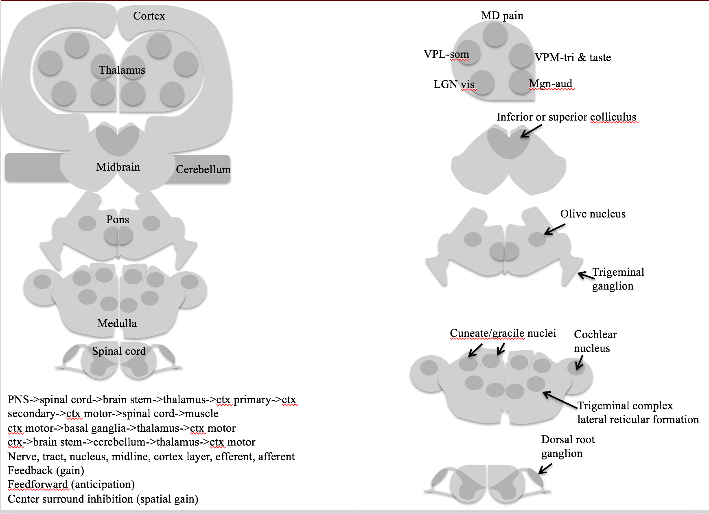

7.1. brain basics¶
7.1.1. delineations¶
3 things
cortex
limbic system
thalamus (has pulvinar), basal ganglia, hypothalamus, hippocampus, amygdala, …
glands / hormones
brain stem
midbrain (has superior colliculus), pons, medulla
cerebellum?? (has 60% of neurons)
7.1.2. numbers¶
human brain
86 bil total
16 bil in cortex - largest of anything (proportionally)
15 tril synapses
1 glial cell : 1 neuron
cooking allowed us to meet the energy requirements for this
7.1.3. whole brain¶
Cerebrum - The cerebrum is the largest portion of the brain, and contains tools which are responsible for most of the brain’s function. It is divided into four sections:
the temporal lobe
the occipital lobe
parietal lobe
frontal lobe.
The cerebrum is divided into a right and left hemisphere which are connected by axons that relay messages from one to the other. This matter is made of nerve cells which carry signals between the organ and the nerve cells which run through the body.
Frontal Lobe - This lobe controls a several elements including creative thought, problem solving, intellect, judgment, behavior, attention, abstract thinking, physical reactions, muscle movements, coordinated movements, smell and personality.
Parietal Lobe - this lobe focuses on comprehension. Visual functions, language, reading, internal stimuli, tactile sensation and sensory comprehension will be monitored here.
Sensory Cortex - The sensory cortex, located in the front portion of the parietal lobe, receives information relayed from the spinal cord regarding the position of various body parts and how they are moving. This middle area of the brain can also be used to relay information from the sense of touch, including pain or pressure which is affecting different portions of the body.
Motor Cortex - This helps the brain monitor and control movement throughout the body. It is located in the top, middle portion of the brain.
Temporal Lobe: The temporal lobe controls visual and auditory memories. It includes areas that help manage some speech and hearing capabilities, behavioral elements, and language. It is located in the cerebral hemisphere.
Wernicke’s Area- This portion of the temporal lobe is formed around the auditory cortex. While scientists have a limited understanding of the function of this area, it is known that it helps the body formulate or understand speech.
Occipital Lobe: The optical lobe is located in the cerebral hemisphere in the back of the head. It helps to control vision.
Broca’s Area- This area of the brain controls the facial neurons as well as the understanding of speech and language. It is located in the triangular and opercular section of the inferior frontal gyrus.
Cerebellum
This is commonly referred to as “the little brain,” and is considered to be older than the cerebrum on the evolutionary scale. The cerebellum controls essential body functions such as balance, posture and coordination, allowing humans to move properly and maintain their structure.
60% of neurons
7.1.3.1. thalamocortical system¶
cortex has layers that are connected in columns through 5 layers
cotex has different types based on distributions of cells through layers (Brodmann map 1909 has 50ish areas)
thalamus has lots of connections - gates what goes into cortex
7.1.3.2. limbic system¶
The limbic system contains glands which help relay emotions. Many hormonal responses that the body generates are initiated in this area. The limbic system includes the amygdala, hippocampus, hypothalamus and thalamus.
Amygdala:The amygdala helps the body respond to emotions, memories and fear. It is a large portion of the telencephalon, located within the temporal lobe which can be seen from the surface of the brain. This visible bulge is known as the uncus.
Hippocampus: This portion of the brain is used for learning memory, specifically converting temporary memories into permanent memories which can be stored within the brain. The hippocampus also helps people analyze and remember spatial relationships, allowing for accurate movements. This portion of the brain is located in the cerebral hemisphere.
Hypothalamus:The hypothalamus region of the brain controls mood, thirst, hunger and temperature. It also contains glands which control the hormonal processes throughout the body.
Thalamus:The Thalamus is located in the center of the brain. It helps to control the attention span, sensing pain and monitors input that moves in and out of the brain to keep track of the sensations the body is feeling.
7.1.3.3. brain stem¶
All basic life functions originate in the brain stem, including heartbeat, blood pressure and breathing. In humans, this area contains the medulla, midbrain and pons. This is commonly referred to as the simplest part of the brain, as most creatures on the evolutionary scale have some form of brain creation that resembles the brain stem. The brain stem consists of midbrain, pons and medulla.
Midbrain:The midbrain, also known as the mesencephalon is made up of the tegmentum and tectum. These parts of the brain help regulate body movement, vision and hearing. The anterior portion of the midbrain contains the cerebral peduncle which contains the axons that transfer messages from the cerebral cortex down the brain stem, which allows voluntary motor function to take place.
Pons: This portion of the metencephalon is located in the hindbrain, and links to the cerebellum to help with posture and movement. It interprets information that is used in sensory analysis or motor control. The pons also creates the level of consciousness necessary for sleep.
Medulla: The medulla or medulla oblongata is an essential portion of the brain stem which maintains vital body functions such as the heart rate and breathing.
7.1.4. 1 - introduction¶

7.1.4.1. genomics¶
male Drosophila uses body position and environment to add rhythmic notes to song
female uses this to gauge male’s brain
neural circuits make up neural systems
neural systems serve 3 general functions
sensory systems
motor systems
associational systems - link the other two, higher order functions
gene has coding DNA (exons) and regulatory DNA (introns)
model organisms
cat - visual cortex
squid and sea slug had really large neurons
4 species: worm C. elegans, Drosophila, zebrafish Danio rerio, mouse Mus musculus
complete genome is available for them
can try homologous recombination - splicing in new genes
human genome has ~20k genes, ~14k expressed in brain, ~6k expressed only in brain
single-gene mutations can cause diseases like microcephaly
simulate brain as a computer
passive cabling equation
theoretical neuroscience
blue brain project
human brain project
7.1.4.2. cellular components¶
neuron doctrine by Ramon y Cajal / Sherrington replaces Golgi’s reticular theory
Cajal uses Golgi’s salt-staining method to show neurons are distinct
Sherrington finds synapses
there are rare gap junctions between neurons (where there are electrical synapses)
neurons
number of inputs reflects convergence
number of targets reflects divergence
local circuit neurons = interneurons - short axons
projection neurons - long axons
glial cells - support and regeneration
outnumber neurons 3:1
they are stem cells - can generate new glia
maintaining ion gradients, modulating nerve signals, modulating synaptic action, scaffolding, aiding recovery
astrocytes - in CNS, maintain chemical environment, retain stem cell properties
oligodendrocytes - in CNS, lay down myelin - in PNS, Schwann cells do this
microglial cells - remove debris
glial stem cells - make more glia and sometimes neurons
7.1.4.3. cellular diversity¶
~10^11 neurons, more glia
histology - microscopic analysis of cells
stains
Golgi stain - randomly stains only some neurons
Nissl stain - only stains cell bodies
Myelin stain - only stains myelin
7.1.4.4. neural circuits¶
neuropil - bundle of dendrites/axons/glia - where synaptic connectivity occurs
afferent neuron - carries info toward the brain
efferent neuron - carries info away
myotatic reflex example - knee-jerk
7.1.4.5. organization of the human nervous system¶
sensory systems
motor systems
CNS
brain
spinal cord
PNS
sensory neurons
somatic motor division - connect CNS to skeletal muscles
autonomic or visceral motor division - innervate muscles / glands
autonomic ganglia - peripheral motor neurons that take inputs from brainstem / spinal cord
enteric system - small ganglia / neurons in gut that influence gastric motility and secretion
sympathetic division - ganglia lie near the vertebral column and sent their axons to a variety of targets
parasympathetic division - ganglia are found near organs they innervate
groupings
ganglia - accumulations of cell bodies / supporting cells
nerve - bundles of axons in PNS
tract - bundles of CNS axons
if they cross the brain midline called commisures
nuclei - local accumulations of similar neurons
cortex - sheet-like arrays of neurons
gray matter - has more cell bodies
white matter - has more axons
7.1.4.6. neural systems¶
unity of function - divide things into different systems - ex. visual
representation of information - ex. vision can be topographic map, taste can be computational map
subdivision into subsystems - ex. vision has color, form, motion, all in parallel
7.1.4.7. structural analysis¶
often-used lesion studies
anterograde - source to termination
vs retrograde - terminus to source
7.1.4.8. functional analysis of neural systems¶
electrophysiological recording - uses electrodes, neuron-level
can determine receptive field - region in sensory space where a specific stimulus elicits a spike
functional brain imaging - noninvasive, records local activity
computerized tomography (CT), magnetic resonance imaging (MRI), diffusion tensor imaging (DTI), PET, SPECT, fMRI, MEG, MSI
7.1.4.9. analyzing complex behavior¶
cognitive neuroscience - understanding higher-order functions
neuroethology - complex behaviors of animals
7.1.5. 2 - electrical signals of nerve cells¶
microelectrode - fine glass tubing filled with good conductor
all cells have a voltage difference across them
assume resting potential - we’ll use -58 mV
depolarized - less negative - we’ll use +58 mV
potentials
receptor potential - (small) due to the activation of sensory neurons by external stimuli
at terminal of dendrite
graded - depends on how strong the input is
synaptic potential - (small) caused by activation of synapse
at middle of dendrite
action potential - cause by the other 2
at the axon
active transporters create differences in concentrations of specific ions - battery
cells can be depolarized by adding too much K+ outside
ion channels - make membranes selectively permeable - wires
ions
outside: high Na, Cl; low K
generally 10:1 ratio between inside, outside
inside of cell has a bunch of negative proteins to balance chlorine
ions want to spread out because of entropy (then they factor in charge difference)
\(V_{ion} = 58/z * log(X_{out} / X_{in}) \)
calculate for each ion, if able to move
z is charge on ion
for potassium: 58/1 * log(.1) = -58mV
Cl Nernst potential is actually -70 mV (even though we assumed -58 before)
Cl works as an inhibitor - ex. alcohol lets chloride in
whichever ion leaks, this determines the membrane potential
hodgkin-huxley
large squid escape neurons
adding K+ outside depolarizes the cell
adding Na+ outside raises height of spike
7.1.6. 3 - voltage-dependent membranes¶
voltage clamp - one electrode outside, one inside
measured with reference to outside (usually more negative inside)
keeps voltage constant
current clamp - keeps current constant
current clamp - just measures the voltage without interfering
patch-clamp - suction part of cell into pipette
passive properties
current injection: \(V_t = V_{\infty} (1-e^{-t/ \tau})\)
voltage decay: \(V_t = V_{\infty} e^{-t / \tau}\)
block Na+ current with tetrodotoxin
block K+ current with tetraethyl-ammonium
refractory period is because Na needs to stop being inactivated
Na+ is transient, K+ is not
myelin insulates sections - less ion loss
called saltatory conduction
faster and more efficient
concentrates action potential to nodes
without myelin, 10 m/s with myelin, 100 m/s
deals with JAM receptor system
umyelinated can be ok
might want to regenerate
don’t care about speed
PNS
Schwann cells
loss - Guillan-barre syndrome
CNS
oligodendrocytes
loss - multiple sclerosis (MS)
7.1.7. 4 - ion channel transporters¶
patch electrode - pull a piece of membrane out

cell-attached - don’t break membrane
whole-cell - break membrane
inside-out - inside of membrane is outside electrode
outside-out - outside of membrane is outside electrode - this method is always preferred
tetrodotoxin binds to outside of cell membrane
some channels are delayed
self-inactivating = transient - channels turn off by themselves
take 10-20 ms
voltage-gated channels
Na+, K+, Ca, Cl
frog Xenopus Ooctyes ion channels are studied
TRP channels gated by mechanical / heat
4 K+ channels
delayed rectifier
fast acting - shapes AP, used for hearing
late phase - slow ending, makes AP fire again
inward rectifier - open at resting potential - establishes membrane potential
mitten model - protein rotates around
human genes: 10 Na, 10 Ca, 100K, ~5 Cl
there are more types of potassium channels
channel-opathies - diseases can be caused by altered ion channels
ion transporters
ATPase Pumps
Na+/K+ pump
Ca pump
ion exchangers
Na+/K+ pump exchanges 3Na for 2K ions
1/3 of body’s energy
2/3 of neuron’s energy
brains use 20% of body’s energy
Ouabain blocks this
SERT - Na transporter
co-transporter
ligand-gated channels
respond to a chemical
usually allow Na, K, Cl to flow in and out
7.1.8. 5 - synapses¶
7.1.8.1. synapse types¶
electrical synapses
gap junction channels
ions flow through gap junction channels
presynaptic and postsynaptic cell are almost the same
delay is fast (.1 ms)
gap junction proteins have been showing up in diseases
simple organisms have these
chemical synapses
bouton - end of presynaptic dendrite
spines - start of postsynaptic dendrite
voltage-gated Ca comes in and causes vesicles to fuse with presynaptic membrane
neurotransmitter released
bind to ligand-gated channels which let ions flow through
if Cl flows into postsynaptic cell - inhibition
pumps get rid of neurotransmitters quickly
7.1.8.2. neurotransmitter types¶
released when Ca comes in due to depolarization
peptides
ex. oxytocin
require long Ca exposure
loaded into vesicles up by the cell body - can take days to get to bouton
neurotransmitter diffuses away - doesn’t always have specific target
can spread to all neurons in the area (ex. substance P)
small & fast
glutamate, Ach, GABA
loaded into vesicles in bouton
presynaptic cell takes these back up
7.1.8.3. discovery¶
neurotransmitter lifecycle
synthesis -> receptors -> function -> removal
important that they are removed
60 s to recycle
Loewi’s experiment showed that neurotransmitters can flow through solution to synchronize heart
7.1.8.4. synaptic transmission¶
minis = MEPP - not big enough to fire the neuron
you can treat a muscle as a post-synaptic junction
chatter from single vesicle release
quantal basis of neurotransmitter release - 1,2,3,etc because vesicles release as all-or-none
synapses / vesicles are all about the same size across different species
receptors receive these neurotransmitters differently
each vesicle is covered with proteins
SNAPs on plasma membrane
SNAREs on vesicle
ex. synaptobrevin
botulinum toxin, tetanus toxin - block synaptobrevin - clip other proteins
render a vesicle inactive
they recognize each other and lock for priming - ready to release when Ca+ enters
need to endocytose membrane to make more vesicles
endocytosis includes clathrin which curves the membrane
can measure single ligand-gated channel by clamping it alone
7.1.9. 6 - neurotransmitters¶
7.1.9.1. receptors¶
ionotropic
Name
AMPA GluR-x
NMDA NR-x
Kainate
GABA-A
glycine
Nicotinic Ach
5HT-3
P2x purinergic
Abbrev
AMPA
NMDA
Kainate
GABA
Glycine
nACh
Serotonin
Purines
Ion
Na
Na/Ca
Na
Cl
Cl
Na
Na
Na
metabotropic
Name
mGlu-x
GABA-B
D-x
Alpha, beta, adrenergic
H-x
5HT1-7
Purinergic A or P
Ach Muscarinic-x
Abbrev
Glutamate
GABA_B
Dopamine
NE,Epi
Histamine
Serotonin
Purines
Muscarinic
Function
cocaine, ADHD drugs
antianxiety
unkown, probs sleep
3 is ionotropic!
mushroom drugs


7.1.9.2. excitatory¶
Acetylcholine - excites muscle cells
receptors: nAch
Acetylcholinesterase breaks down Ach after it is released
neurotoxins (ex. Serin) break down Acetylcholinesterase so Ach stays and muscles stay on (nerve gases)
Myasthinia is when you develop antibodies against your own nAch receptors
you have trouble controlling your eyes
Glutamate - excites pyramidal cells
VGLUT pumps Glutamate into vesicles
EATT transports extracellular Glutamate into presynaptic terminal / nearby Glial cells
Glial cells convert glutamate to glutamine (inactivates) and glutamine is taken up by the presynaptic terminal
glutamate overload if you overload the inactivating pumps in the glial cells
glutamate receptors
AMPA - fast Na only
NMDA - slow, Na and Ca and also requires depolarization
7.1.9.3. inhibitory¶
,4. GABA/glycine
have simple transporters that move released GABA into presynaptic terminal / Glia
Ionotropic GABA receptors - depressants; shut down nervous system
can bind steroids like estrogen - different effects in men / women
alcohol binds to this, shuts things down
immature neurons have high intracellular Cl - people don’t know why
7.1.9.4. neuromodulators¶
lifecycle molecules
synthesis: L-Dopa, trytophan
reuptake: DAT, NET, SerT
breakdown: MAO
vesicular transport: VMAT
catecholamines
pathway: DOPA -> Dopamine -> Norepinephrine -> Epinephrine
dopamine - forming of memories
produced by substantia nigra
loss of these neurons -> Parkinson’s
norepinephrine
produced by locus coeruleus
serotonin = 5HT - happiness
Tryptophan -> serotonin
serotonin produced by Raphe nuclei
affected by LSD
histamine - not well-known
antihistamines can make you hallucinate
atp - sensitivity to pain
neuropeptides - slow
substance P - pain
alpha-endorphin - analgesia (block pain)
vasopressin - blood pressure
thyrotropin releasing hormone (TRH) - metabolism
neuropeptide Y - mood/aggression
enndocannabinoids - weed
ex. anandamide - binds to CB1 (cannabanoid 1 receptor)
retrograde signal - post back to pre - inhibit the inhibitor
this increases the signal
nitric oxide - gas
binds to guanylyl cyclase
7.1.10. 7 - molecular signaling¶
7.1.10.1. localization¶
chemical signaling mechanisms
synaptic - local
ex. Ach
paracrine - medium distance, neurotransmitter sprinkled and nearby targets take it up
ex. serotonin
endocrine - get into your blood stream - body-wide signaling
ex. vasopressin
amplification = enzyme
signal that activates enzyme amplifies signal
cell-signaling molecules
cell-impermeant molecules
need transmembrane receptors
ex. glutamate
cell-permeant molecules (steroids)
can have intracellular receptors
signaling molecules
adhesion molecules - like a lock and key - binds neurons together
spine has small neck - hard for proteins to go through it
keeps information local
large raft of signaling molecules keeps info local
7.1.10.2. celllular receptors¶
ionotropic - channel-linked receptors
neurotransmitter binds to a channel that opens
ex. Glu ionotropic receptor
signal is sodium coming in
enzyme-linked receptors
ex. TrkA NGF receptor - Tyrosine kinase
once it binds, it becomes an enzyme
metabotropic - G-protein-coupled receptors
ex. Glue metabotropic receptor
activate G-protein that then does something
these require energy for G-proteins
Heterotrimeric G-proteins - G-protein has 3 subunits: -
 1. Gs - binds norepinephrine
1. Gs - binds norepinephrinecAMP
2. Gq - binds glutamate
- + DAG (diaglycerol) & IP3
3. Gi - binds dopamine
- inhibits cAMP
Monomeric G-proteins - G-protein has just one subunit - ex. Ras
intracellular receptors
ex. estrogen receptors
activates intracellular transcription factors
7.1.10.3. second messengers¶
Ca must be pumped out of neuron or
Ca can be stored into internal stores in ER
Adenylyl cyclase turns ATP into cAMP -> PKA
Guanylyl cyclase turns GTP into cGMP -> PKG
would use inside-out patch to study these
Phospholipase C -> PKC -> IP3 lets Ca out of ER (usually kills cell)
7.1.10.4. protein control¶
kinases (on switch) add phosphate to protein and makes them active
PKA - cAMP binds then catalytic domain can bind
non-covalent so can diffuse into nucleus
CAM kinase
covalent
protein kinase C
covalent - very local to membrane
phosphatases (off switch) remove phosphates
7.1.10.5. long-term alteration¶
long-term alteration requires epigenetic changes (change transcription factors)
transcription factor CREB requires three things at once
Ca comes in and binds Cam kinase
activate Protein kinase A - this can stay in nucleus for a while
how much to make
MAP kinase, ras
on/off switch
when all of these things come in at once - convergence signaling - CREB will make actin, AMPA receptors
TrkA binds NGF (Nerve growth factor) - peptide and has 3 pathways:
PI 3 kinase
ras
Phospholipase C
this displays divergence signaling
cerebellar synapses
mGlu inhibits AMPA with negative feedback
lets out Ca which depresses AMPA receptor
signal scaling - tyrosine hydroxylase makes dopamine
more Ca in bouton activates more hydroxylase -> makes more dopamine
Ca comes in whenever fires
use it or lose it
7.1.11. 8 - synaptic plasticity¶
7.1.11.1. short-term¶
measured by firing neuron before muscle and recording response
synaptic facilitation - frequency-dependent plasticity - fire faster, get bigger EPSPS
Ca comes in and persists during next pulse
ms time scale
synaptic depression - transmitters are depleted
s time scale
synaptic potentiation/augmentation - changes in presynaptic proteins
min time scale
experiments
habituation - decrease vesicles on sensory neuron after too much stimuli
sensitization - associate two stimuli together:

mechanism
sensory neuron -> serotinergic neuromodulatary interneuon -> motor neuron
interneuron releases serotonin
cAMP produced in sensory neuron
long term - CREB in nucleus - synapse growth
central signal for LTM
activates PKA
short term - decreases K+ current
sensory neuron doesn’t learn, neuromuscular junction gets stronger
mutant genes associated with cAMP identified
phosphodiesterase - if you remove this, too much cAMP
adenylate cyclase
7.1.11.2. long-term¶
HM lost his memory w/out hippocampus
site of LTP
at night memories are moved from hippocampus (flash drive) to cortex (long-term hard drive)
Schaffer collateral pathway is one pathway in hippocampus (also perforant pathway, mossy fiber)
pre-stimulate with tetanus
later when stimulated EPSP is bigger
usually 20 ms between firing - LTP when multiple firing in less time
Schaffer mechanism - NMDA receptor key to this
both AMPA and NMDA exist
NMDA -> Ca -> CAM kinase -> LTP
Mg blocks NMDA unless already depolarized
requires good timing!
silent synapses
short-term - more AMPA receptors, long-term new synapses
all synapses born with only NMDA
protein synthesis needed for LTP (mostly making more AMPA)
unclear how synapse decides whether to strengthen / make more synapses
LTD - long-term depression is opposite of LTP - long-term potentiation
low levels of Ca lead to AMPA being endocytosed
mGlu -> PKC -> starts LTD
epilepsy - neurons fire together and wire together